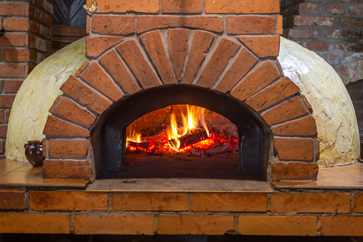

Cabrito do Avô Kim
Ingredients
4a5 Kg cabrito 5 dentes de alho 1 mão de salsa 150 g banha meia malga de vinho verde tinto 1 embalagem de pimentão doce 1 mão de sal 15 ml vinagre
Instructions
- Picar os alhos e juntar ao vinho
- derreter a banha
- Juntar todos os ingredientes, vinho, alhos, 1/3 da salsa, pimentão, sal, vinagre e banha derretida
- Usar a batedeira durante - 30 segundos até criar uma emulsão fina
- Barrar toda a carne dos dois lados
- Enfeitar com salsa
- Forno a Lenha à temperatura máxima (200 ºC) durante 2 horas
- Bom apetite
